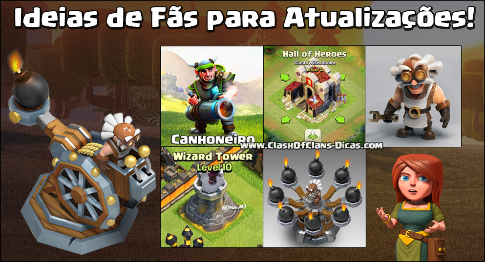
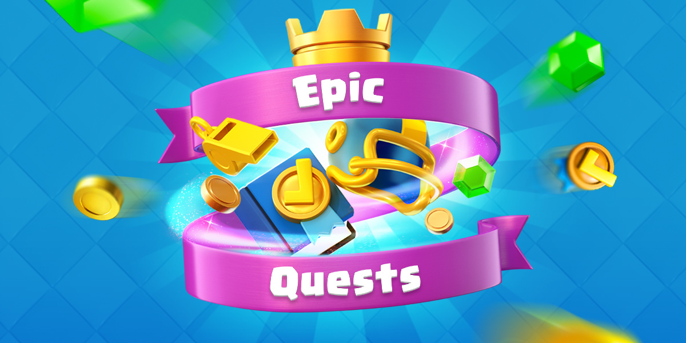

Já foi confirmado que a próxima atualização do Clash Royale vai acontecer lá para o final deste mês de junho, isto já não é...
Já foi confirmado que a próxima atualização do Clash Royale vai acontecer lá para o final deste mês de junho, isto já não é segredo para ninguém! Mas hoje o perfil oficial do jogo no Discord, respondeu algumas perguntas de jogadores sobre o conteúdo desta atualização e outras perguntas relacionadas o jogo em geral!
1) A Atualização é este mês, o objetivo é que seja próxima semana, esperamos. Está vindo com mudanças de balanceamento, novas cartas (há um novo cartão de condição de vitória), nenhum cartão épica ou lendária desta vez, mudanças de qualidade de vida. 2) Buff do Gigante Real ainda está na linha, poderia acontecer no próximo mês com o próximo conjunto de alterações de balanceamento mensal (sim, o balanceamento muda este mês e mês q vem novamente) 3) Não há planos para adicionar mais slots de deck ou mais slots de baús, sem reformulação de feitiço por enquanto. 4) Eles ainda estão indecisos sobre qual é a melhor abordagem para as cartas de heróis, já que eles são uma grande coisa que eles não querem apressar. 5) Melhorias nas Guerras de Clãs acontecerão no futuro, mas não neste patch! 6) Nenhuma arena nova neste patch ou uma nova tela de carregamento, também um “nerf” do Morteiro seria o buff do Gigante Real. 7) Eles têm pensado em fazer do Baú das Guerras de Clãs um Baú da Estratégia. 8) Golem de Lava não é “algo” ainda, é apenas um conceito por enquanto. Eles continuam brincando com o assunto com um emoji de porco, no entanto. 9) Não há planos para adicionar skins até o momento, mas se o fizerem, provavelmente seria para as cartas heroicas. 10) A atualização de junho será de médio porte, e também abrirão uma nova posição para outro Gerente de Comunidade para o Clash Royale em agosto.  11) Tim é o único Gerente da Comunidade no momento, sua carta favorita é o Espírito de Gelo (ele é muito fofo e útil) e não gosta mais da torre de bombas, ele também não fala Finlandês. Ele também não quer modificar o servidor de CR no Discord, ele vai deixar para os moderadores atuais. 12) Um buff na lavahound que eles estão considerando atualmente é um buff dos lava pups. O Arqueiro Mágico não está “na linha”, e não está “na fila”. 13) Eles viram o vídeo do Youtuber Clash With Ash sobre o futuro do Clash Royale e gostaram dele. No momento, os anúncios opcionais no jogo “não estão em discussão”, eles querem ver como isso funciona primeiro para o Brawl Stars. E “falando sobre” tickets de desafio, assim como Ash (CWA) sugeriu, mas não está trabalhando nisso atualmente. 14) Se o Gigante Real for melhorado, os Bárbaros de Elite podem ser buffados também, mas não há planos. Tudo é possível. 15) “Nós talvez tenhamos cometido alguns erros com a rapidez com que os Clans são capazes de progredir através das Ligas de Guerra dos Clãs :/” como uma resposta à progressão do jogador f2p além da prata. Eles estão super conscientes da situação e estarão fazendo melhorias/mudanças abaixo da linha.  17) “Assista TV Royale na segunda-feira, TV Royale é a nova Radio Royale, nós mudamos o nome”. Também com o objetivo de dar uma melhor cobertura a Liga Clash Royale. 18) As mudanças na qualidade de vida serão “muito poucas”, mas nada relacionado a limites de nível nesta atualização. 19) O evento de Corrida das Gemas estará voltando em algum ponto novamente. 20) “Queremos adicionar um sistema pelo qual possamos alternar os modos de Guerra de Clãs sem uma pausa de manutenção e, portanto, podemos alterná-las a cada nova temporada de Guerra. Mas, com o tempo, não podemos fazer isso, então mudaremos eles semi-periodicamente, como com a próxima atualização!” 21) Eles também concordam em ter mais modos padrões de torneios em Guerras e não estão satisfeitos com o estado atual do jogo também.
O que vocês acharam dessas novidades reveladas? Não são grandes informações, mas é uma preparação para o que está por vir nas próximas semanas! Fiquem de olho aqui no site e ativem as notificações, assim que surgir mais detalhes eu mantenho vocês informados!